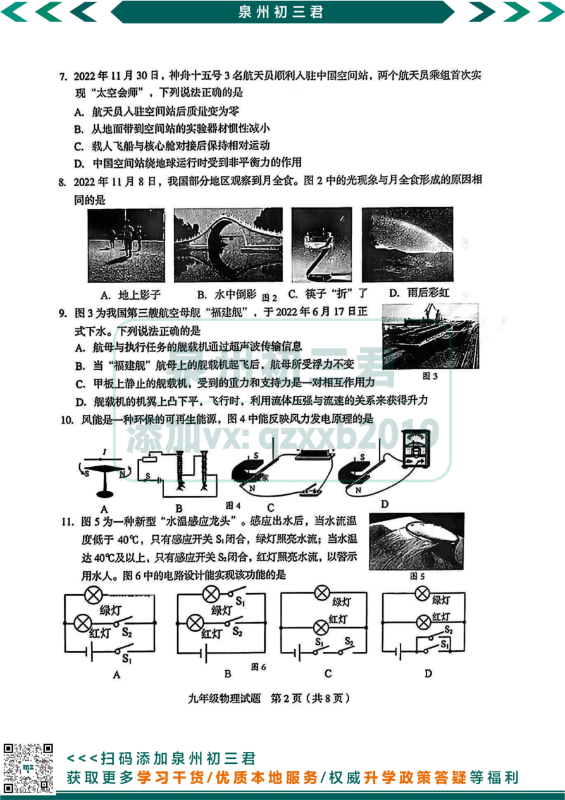
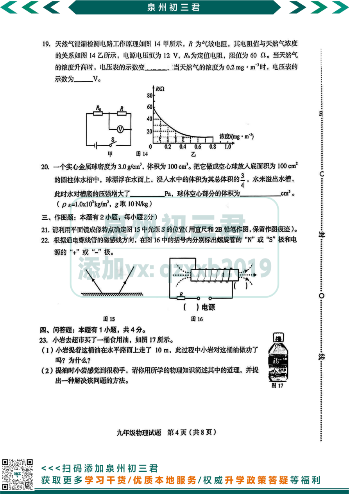

📚 推荐试卷资源
💡 使用说明：IMA 知识库收录福建省各地中考英语质检真题，试卷含听力录音稿。请在 IMA App 中打开知识库查看高清扫描试卷。
IMA 知识库英语试卷（扫描PDF，共13份）
- 📄 2023厦门五月一模英语（含听力原稿）
- 📄 2023年宁德市初中毕业班质量检测英语
- 📄 2023年龙岩市九年级学业质量检查英语
- 📄 2022-2023年南平市第二次教学质量监测英语
- 📄 2022-2023年泉州市初中教学质量监测英语（含详细解析）
- 📄 2022-2023年福州市九年级质量抽测英语（含听力原文）
- 📄 更多试卷请在IMA App知识库「中考复习知识库/英语/试卷」中查看
📸 试卷图片说明：英语质检卷图片需要从KB下载，目前英语试卷文件夹为空。建议：① 在IMA App「中考复习知识库/英语/试卷」上传本地英语PDF质检卷；② 上传后运行
python scripts/kb_sync.py 自动下载渲染。
📋 福建中考英语试卷结构
听力：25题（共25分）
单项选择：15题（共15分）—— 词汇、语法、情景交际
完形填空：1篇10空（共10分）
阅读理解：4篇20题（共40分）
写作：书面表达（约20分）
总分：150分（听力笔试分开）
📸 2023厦门五月一模英语试卷（前4页）
💡 使用说明：点击图片可放大，建议先自己做题，再核对答案。


📸 2023年宁德市初中毕业班质量检测英语试卷（前4页）




试卷来源：IMA知识库「中考复习知识库/英语/试卷」· 2023厦门五月一模 + 宁德质检
⚠️ 若内容与官方真题不符，请以官方为准